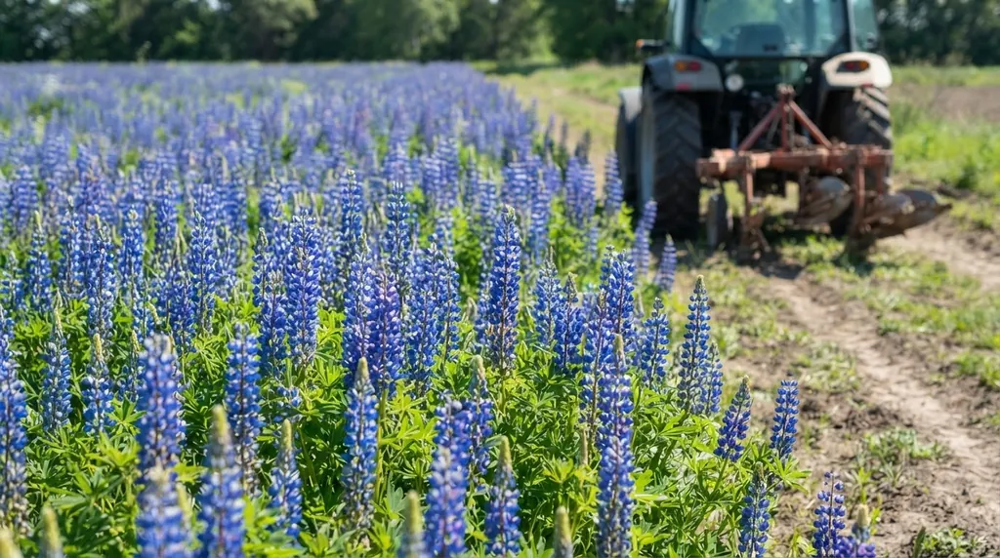
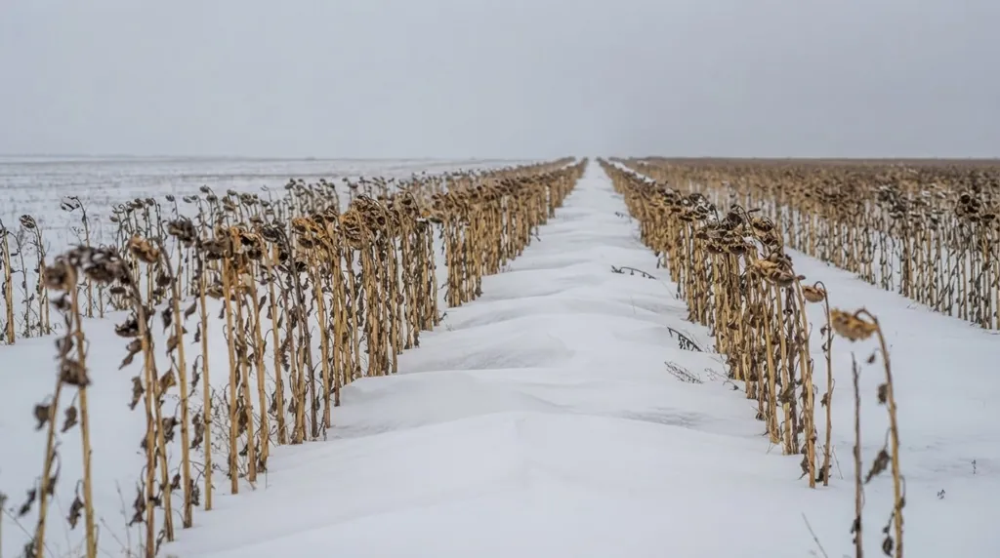

Коротко
- Чорний пар: поле весь сезон без культури, обробіток починають улітку чи восени. Накопичує вологу й чистить від бур’янів.
- Ранній пар: основний обробіток навесні, стерня взимку захищає ґрунт. Підходить для схилів.
- Зайнятий пар: поле займає культура, що рано звільняє його. Дає корм або зелене добриво.
- Чорний пар виграє в посушливі роки й може програти у вологі: тоді пшениця вилягає.
- Постанова КМУ № 164 закладає чорний пар лише в степових регіонах: 5–14% у Північному й 18–20% у Південному Степу.
П’ять видів пару
Пар це поле, яке в цей сезон не дає товарного врожаю, щоб підготувати наступну культуру: накопичити вологу, очистити від бур’янів, збагатити органікою. Різниця між видами в тому, як саме це поле «працює».
| Вид | Що відбувається на полі | Де доречний | Слабке місце |
|---|---|---|---|
| Чорний | Поле весь сезон чисте. Обробіток починають улітку чи восени після попередника, у досліді в Степу це була осіння оранка на 25–27 см. | Посушливий Степ, рівнини, забур’янені поля, насінники озимих | Рік без врожаю, у вологі роки вилягання пшениці |
| Ранній | Після збирання попередника лише поверхневий обробіток, основний навесні (у досліді плоскорізом на 12–14 см). Стерня й солома взимку захищають ґрунт. | Схили, ґрунтозахисні сівозміни | На рівнинах накопичує вологи менше, ніж чорний |
| Зайнятий | Поле займає культура, що рано звільняє його: однорічні трави на зелений корм, вико-вівсяна суміш, ранні просапні. | Лісостеп і Полісся | Культура сама споживає вологу, тож у посуху запасу майже немає |
| Сидеральний | Різновид зайнятого пару: висівають люпин чи буркун і заорюють на зелене добриво за 3–4 тижні до сівби озимих, у фазі зелених бобів. | Поля, де бракує органіки | Потрібне вчасне заорювання й вологи, щоб сидерат встиг вирости |
| Кулісний | Чистий пар із смугами високостеблових рослин (куліси) упоперек зимових вітрів. Куліси затримують сніг. Відстань між ними кратна ширині захвату агрегату. | Степ, вітрові райони | Додаткові операції, потрібно планувати під техніку |
Чорний і ранній пар описані в статті Цилюрика й Шевченка про чистий пар, а решта видів за класичною агротехнікою. Для практики важливо одне: вибір залежить від рельєфу, вологи й того, що ви сіятимете далі.

Що показують цифри
У Полтавському досліді Гангура й Котляра навесні в півтораметровому шарі ґрунту було найбільше вологи після чорного пару: 250,9 мм. Після еспарцету її було на 2,9% менше, після гороху на 2,8–5,6%, а після пшениці по пшениці лише 197,7 мм. Різниця з паром майже п’ята частина.
Але врожайність розподілилася інакше: горох на зерно 4,52 т/га, еспарцет на один укіс 4,45, чорний пар 4,11, пшениця по пшениці 2,96. Пар програв за зерном, і автори пояснюють це виляганням посівів у вологі роки. Їхній висновок: чорний пар доречний у посушливі роки, а в умовах нестійкого зволоження краще працюють горох і еспарцет.
Цилюрик і Шевченко, які розглядають Північний Степ, додають інший акцент: для рівнинних сівозмін чорний пар краще, бо дає вищий урожай озимої пшениці, а ранній пар, за даними, на які вони посилаються, доцільний там, де сильна ерозія.
Скільки пару дозволяє постанова
Постанова КМУ № 164 виділяє чорний пар лише для степових регіонів: 5–14% посівної площі в Північному Степу й 18–20% у Південному. Для Полісся, Лісостепу й Передкарпаття чорний пар у нормативах окремо не виділено. Це відповідає логіці зон: чим посушливіше, тим більше цінується запас вологи. Перед розрахунком звіряйте чинну редакцію документа.
Як обрати
Питання три. Чи посушлива у вас зона й чи потрібна волога під озимі? Тоді чорний пар. Чи є схил з ризиком ерозії? Тоді ранній. Чи потрібна органіка або корм і чи рано звільняється поле? Тоді зайнятий або сидеральний.

І одне застереження. Пар забирає з обороту поле на сезон, тож у схемі його кількість обмежують і порівнюють із альтернативою: горохом чи еспарцетом, які, за полтавськими цифрами, дали зерна більше. Як вставити пар у схему, показано в статті про складання сівозміни, а загальна логіка в посібнику.
Часті запитання
Чим чорний пар відрізняється від раннього?
У чорному парі обробіток починають влітку чи восени після збирання попередника. У ранньому після збирання роблять лише поверхневий обробіток, а основний переносять на весну. Через це стерня взимку захищає ґрунт, що важливо на схилах.
Навіщо потрібен зайнятий пар?
Він дає врожай, який рано звільняє поле, найчастіше корм або зелене добриво, і водночас готує його під озимі. У Лісостепу й на Поліссі озимі сіють переважно саме після зайнятих парів.
Що таке кулісний пар?
Чистий пар, на якому розсіяно смуги високостеблових рослин (куліси). Вони затримують сніг, збільшують запас вологи й зменшують вимерзання озимих. Куліси розміщують упоперек зимових вітрів.
Чи завжди чорний пар кращий за інші попередники?
Ні. У Полтавському досліді він дав найбільше вологи, але за зерном поступився гороху й еспарцету: 4,11 т/га проти 4,52 і 4,45 т/га. У вологі роки пшениця після пару схильна до вилягання.

Директор НВ ТОВ «СІНТА», розробник органічних добрив ТМ GREENODIN.
Опубліковано 12 жовтня 2026. Оновлено 12 жовтня 2026.
Джерела
- Цилюрик О. І., Шевченко М. С. Роль чистого пару в накопиченні води і відновленні водного балансу в сівозміні. Зернові культури, 2019, т. 3, № 2, с. 318–330
- Гангур В. В., Котляр Я. О. Вплив попередників на водоспоживання та продуктивність пшениці озимої в Лівобережному Лісостепу України. Вісник Полтавської державної аграрної академії, 2021, № 1, с. 122–127
- Постанова КМУ від 11.02.2010 № 164 «Про затвердження нормативів оптимального співвідношення культур у сівозмінах в різних природно-сільськогосподарських регіонах»